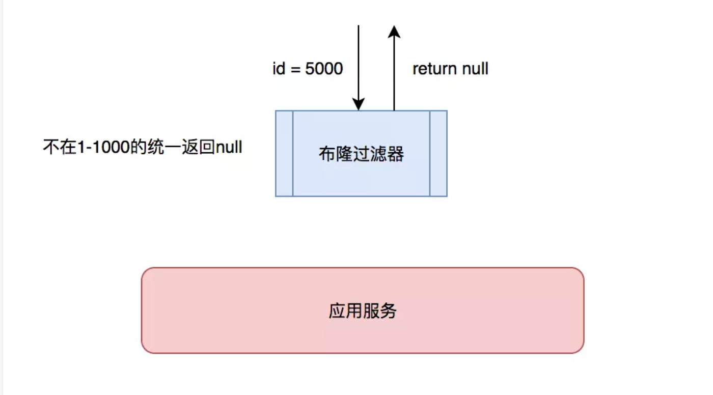
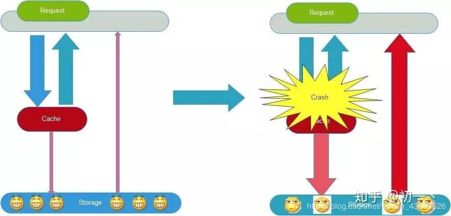

缓存问题
1. 缓存更新
- mysql和redis是两个独立的系统, 在并发环境下, 无法保证更新的一致性
- 如下图（以Redis和Mysql为例），两个并发更新操作，数据库先更新的反而后更新缓存，数据库后更新的反而先更新缓存。这样就会造成数据库和缓存中的数据不一致，应用程序中读取的都是脏数据。
解决方案
方案1: 设计分布式锁(redis-setnx)/使用消息队列顺序执行
- 缺点: 并发能力差
方案2: 更新数据时, 先写入mysql, 再删除缓存
- 主要用于数据对象 (更新少)
- 数据集合可以考虑更新缓存 (集合的查询成本高, 频繁更新缓存效率太低)
- 广泛使用, 如: facebook
2.缓存穿透
- 缓存只是为了缓解数据库压力而添加的一层保护层，当从缓存中查询不到我们需要的数据就要去数据库中查询了。如果被黑客利用，频繁去访问缓存中没有的数据，那么缓存就失去了存在的意义，瞬间所有请求的压力都落在了数据库上，这样会导致数据库连接异常。
解决方案
- 方案1: 对于数据库中不存在的数据, 也对其在缓存中设置默认值Null
- 为避免占用资源, 一般过期时间会比较短

- 方案2: 可以设置一些过滤规则
- 如布隆过滤器(一种算法, 用于判断数据是否包含在集合中), 将所有可能的值录入过滤器, 如果不包含直接返回None, 有误杀概率

布隆过滤器 (拓展)
- 安装包
pip install pybloomfiltermmap3
import pybloomfilter
# 创建过滤器
filter = pybloomfilter.BloomFilter(1000000, 0.01, 'words.bloom')
# 添加数据
filter.update(('bj', 'sh', 'gz'))
# 判断是否包含
if 'bj' in filter:
print('包含')
else:
print('不包含')
3.缓存雪崩
- 如果大量缓存数据都在同一个时间过期, 那么很可能出现 缓存集体失效, 会导致所有的请求都直接访问数据库, 导致数据库压力过大

解决方案
方案1: 设置过期时间时添加随机值, 让过期时间进行一定程度分散，避免同一时间集体失效。
- 比如以前是设置10分钟的超时时间，那每个Key都可以随机8-13分钟过期，尽量让不同Key的过期时间不同。
方案2: 采用多级缓存，不同级别缓存设置的超时时间不同，即使某个级别缓存都过期，也有其他级别缓存兜底。